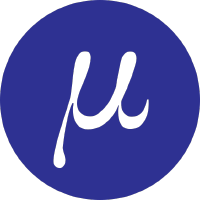

No puede ser tan dificil utilizar la terminal y menos, un editor de texto con tantos atajos raros como en Emacs, Vim o Nano.

Micro es un editor de texto basado en terminal que pretende ser fácil de usar e intuitivo, al mismo tiempo que aprovecha todas las capacidades de los terminales modernos. Viene como un único binario estático, con baterías incluidas, sin dependencias, y puede descargarlo y usarlo ahora mismo.
Como su nombre lo indica, micro pretende ser algo así como un sucesor del editor nano al ser fácil de instalar y usar en caso de apuro, pero micro también pretende ser agradable de usar a tiempo completo, ya sea que trabaje en la terminal o lo prefiera.
Si descargamos el binario en su última versión, lo haremos con:
Si deseas hacerlo desde los repositorios:
Aunque es una aplicación para terminal, micro se destaca por el hecho de poder utilizar el ratón.
Con Alt+g micro mostrará un resumen de los atajos más importantes:
Ctrl-qCtrl+sCtrl+gCtrl+oCtrl+ + y Ctrl + -Ctrl+f. Buscar siguiente palabra Ctrl+n y anterior Ctrl+pShift+Izq/Arriba/abajo/DerechaCtrl+aCtrl-cCtrl+xCtrl + VCtrl + KCtrl+DCtrl + ZCtrl + YAlt + flecha arribaAlt + flecha abajoMediante el archivo de configuración ~/.config/micro/bindings.json, podemos personalizar los atajos:
En esta página tenemos todas las opciones para personalizar los atajos.
Si quisiéramos que el atajo Ctrl-Tab para ir a la siguiente pestaña:
Salir y Guardar:
Los atajos de teclado disponibles por defecto, podemos entrontrarlo en esta web
Ctrl+tCtrl+,Ctrl+.Con Ctrl+e podemos introducir comando a Micro. Por ejemplo el comando de ayuda a plugins help plugins
Reemplaza la palabra 'búsqueda' con la palabra 'valor'. La flag -a se puede usar para reemplazar todas las ocurrencias a la vez.
Permite ejecutar comandos bash desde micro. - run '[Bash command]'
Estos son los plugins oficiales de micro.
Los Plugins podemos instalarlos desde la web de Micro.
Antes de instalar el plugin, es necesario instalar los paquetes de aspell.
Para instalar por ejemplo, los diccionarios Castellano y Catalán:
sudo apt install aspell aspell-es aspell-ca
Instalación del Plugin:
Resaltado de palabras con introduciendo en comando (Ctrl+e) set
Es genial porque si y hay una falta de ortografía en una línea, en la parte iaquierda aparece >>
complemento que corrige palabras comúnmente mal escritas
Instalación:
O introducimos el comando dentro de micro con: Ctrl+e y después plugin install snippets
Ejecutando el comando Ctrl+e
Reinicia
Iniciando
Para initroduce el comando tree
Ahora con TAB podemos abrir el archivo.
Aquí dejo un resumen disponible en el repositorio de GitHub.
| Command | Keybinding(s) | What it does | API for bindings.json |
|---|---|---|---|
tree |
- | Open/close the tree | filemanager.toggle_tree |
| - | Tab & MouseLeft | Open a file, or go into the directory. Goes back a dir if on .. |
filemanager.try_open_at_cursor |
| - | → | Expand directory in tree listing | filemanager.uncompress_at_cursor |
| - | ← | Collapse directory listing | filemanager.compress_at_cursor |
| - | Shift ⬆ | Go to the target's parent directory | filemanager.goto_parent_dir |
| - | Alt Shift { | Jump to the previous directory in the view | filemanager.goto_next_dir |
| - | Alt Shift } | Jump to the next directory in the view | filemanager.goto_prev_dir |
rm |
- | Prompt to delete the target file/directory your cursor is on | filemanager.prompt_delete_at_cursor |
rename |
- | Rename the file/directory your cursor is on, using the passed name | filemanager.rename_at_cursor |
touch |
- | Make a new file under/into the file/directory your cursor is on, using the passed name | filemanager.new_file |
mkdir |
- | Make a new directory under/into the file/directory your cursor is on, using the passed name | filemanager.new_dir |
GitHub - NicolaiSoeborg/filemanager-plugin: A file manager plugin for the editor "Micro"
Para que las líneas no salgan de la pantalla y haga un salto de línea automático, activaremos el softwrap
Utilizaremos nano para editar el archivo de configuración:
Lanzando el comando, podemos agregar la opción autosave con:
Podemos establecer cada cuanto tiempo queremos que se guarde en una sesión con el comando set. Pulsamos Ctrl+e
Una vez introducido el comando, quedará guardado en el archivo de configuración nano ~/.config/micro/settings.json.
Para ir por ejemplo a la línea 33, lo haríamos así:
El proceso sería:
Ctrl+ereplace palabra palabra_a_reemplazary, para no sustituila n.Con el comando replaceall palabra palabra_a_reemplazar, reemplazaremos todas las palabras de un archivo.
Podemos cambiar el tema de micro y acceder a la ayuda, lo haremos con el comando:
Ejemplo: Introducimos el siguiente comando
Hay varios temas disponibles como: monokai, darcula,
monokai (also the default colorscheme)zenburngruvboxdarculatwilightrailscastbubblegum (light theme)Yo he optado de momento por:
O instalando el plugin monokai-dark introduciendo también desde el propio micro con Ctrl+e
Publicado por Angel el Thursday 24 March del 2022 y actualizado el Tuesday 19 July del 2022
También te puede interesar:
Powered by org-bash-blog
Written in OrgMode with Emacs and converted to HTML with Pandoc

Este obra está bajo una licencia de Creative Commons Reconocimiento-NoComercial-CompartirIgual 4.0 Internacional.